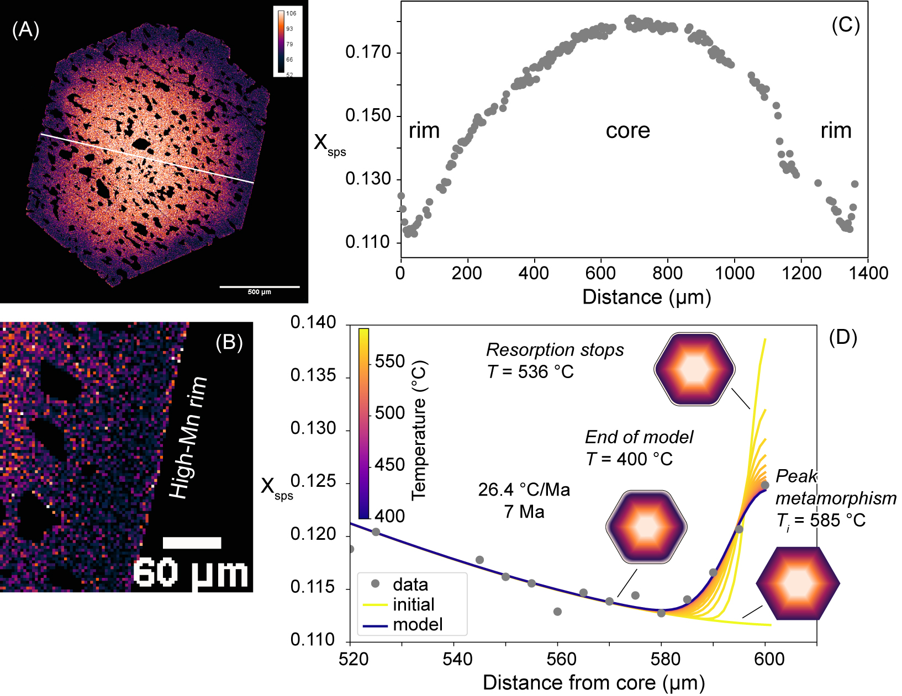
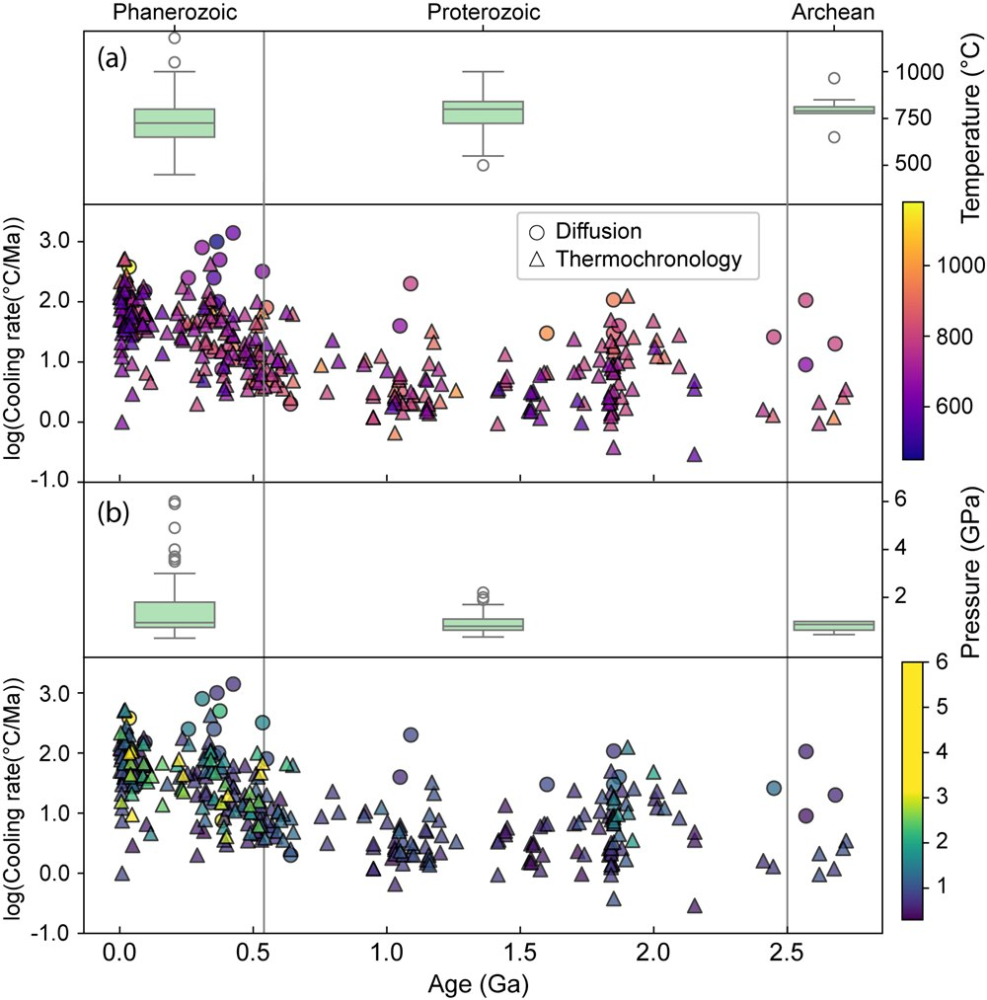

1 / 2
Under review · Precambrian Research
Rapid metamorphic cooling of the Quetico Subprovince, Canada, challenges the paradigm of long-lived slow-cooling Archean metamorphism
We investigate the metamorphic cooling history of the Neoarchean Quetico Subprovince of the Superior Province using 40Ar/39Ar thermochronology and garnet diffusion modeling. Our findings challenge the assumption that slow-cooling Archean metamorphism reflects a tectonic regime fundamentally different from modern plate tectonics. Currently available timescale data are limited in temporal resolution and it is possible that rapid cooling of orogenic belts could have been more prevalent in the Archean than often considered.